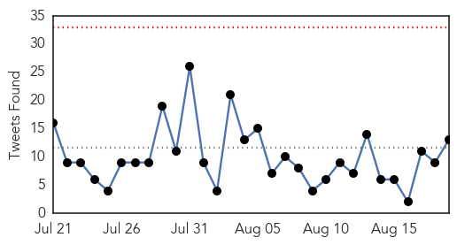
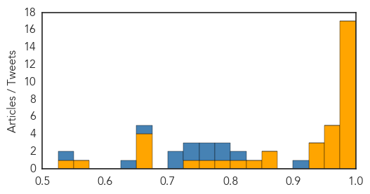

Ebola
30-Day Web Trend
1 alerts, 0 warnings

30-Day Twitter Trend
0 alerts, 0 warnings

Article Locations

Article Confidences
Top Articles:
- 1.000
- UN: Ebola outbreak a public health emergency
- 1.000
- Explaining Emerging Infectious Diseases
- 0.999
- South Jersey malaria case triggers Ebola precautions
- 0.999
- Americans Who Contracted Ebola In Liberia Recover
- 0.999
- Politico SL News Traditional practices nurture the Ebola virus
- 0.998
- Politico SL News NERC warns against stigmatization of EVD survivors
- 0.997
- No Ebola exposure for Stratford patient
- 0.993
- Quick, Paper-Based Ebola Test May Help in Remote Areas
- 0.993
- Ebola’s victims of the future: pregnant women
- 0.991
- Ebola Ruled Out for New Yorker Who Returned From...
- 0.991
- Ebola Ruled Out for New Yorker Who Returned From...
- 0.990
- WHO will lead and who will pay? The World Health Organization, Ebola and the future of global health
- 0.987
- Sierra Leone awaits countdown to Ebola-free declaration
- 0.987
- Pres. Obama Commits To Containing Ebola In West Africa
- 0.982
- Liberia Goes 35 Days In Ebola Free Count-down
- 0.981
- Sierra Leone awaits countdown to Ebola-free declaration
- 0.979
- Gloucester Township Woman Diagnosed With Malaria Following West African Trip
- 0.974
- Rapid paper-strip test for Ebola in sight
- 0.973
- Sierra Leone awaits countdown to Ebola-free declaration
- 0.965
- Engaging communities on Ebola is about being able to re-mix the message - Sierra Leone
- 0.961
- Woman tested for malaria at Camden County hospital
- 0.959
- Politico SL News Ebola volunteer workers integration project unveiled
- 0.942
- Sierra Leone awaits countdown to Ebola-free declaration
- 0.928
- Politico SL News Sierra Leone Ebola-free by October
- 0.927
- Ghana halts Ebola vaccine trial due to community protests
- 0.860
- Celebrating everyday humanitarians: #ThanksHealthHero
- 0.858
- African music show to benefit healthcare workers fighting Ebola virus in west Africa
- 0.825
- Accessing water in Liberia - Liberia
- 0.816
- Meet an Aid Worker Behind the Ebola Response in Liberia
- 0.784
- Humanitarian Workers Killed in Line of Duty Honored
- 0.763
- N.J. traveler negative for Ebola after return from Africa and a fever, officials say
- 0.739
- Suspected Ebola patient rushed to New York hospital after visit to West Africa
- 0.670
- Police, EMTs Respond to 'Communicable Disease' Incident in Gloucester Township
- 0.667
- Protect medics in war zones: WHO
- 0.656
- Politico SL News Sierra Leoneans face poor, yet expensive medical services
- 0.652
- “Inspiring the World’s Humanity”
- 0.559
- Messy JFK Memorial Hospital & The Kennedy Legacy
- 0.531
- Syrian Boat People: A global crisis needs global solutions
Top Tweets:
- 0.977
- Hospital: No Ebola exposure for Stratford patient - Cherry Hill Courier Post http://t.co/m3UUIlnFGo ebola EVD
- 0.970
- Sierra Leone awaits countdown to Ebola-free declaration - Yahoo News http://t.co/WCXpocQpA5 ebola EVD
- 0.946
- Doctors rule out Ebola for patient who recently visited West Africa - New York Post http://t.co/nCqCvYBHuo ebola EVD
- 0.944
- In West Africa, of the 875 health workers infected with Ebola, 509 died http://t.co/YGM9YazVzm ThankHealthHero
- 0.943
- Sierra Leone Nears Ebola-free Declaration - Voice of America http://t.co/Qu5VcAAeM7 ebola EVD
- 0.932
- 'No public health risk' after local Ebola scare - Cherry Hill Courier Post http://t.co/tkVLh9SGze ebola EVD
- 0.926
- Patient with possible Ebola taken to NYC hospital - New York Post http://t.co/sAWK9iUiml ebola EVD
- 0.923
- RT: What's Working: A Sierra Leone hospital's resilience saves lives from Ebola WorldHumanitarianDay ShareHumanity http://t.…
- 0.921
- RT: In West Africa, of the 875 health workers infected with Ebola, 509 died http://t.co/YGM9YazVzm ThankHealthHero
- 0.901
- Meet an Aid Worker Behind the Ebola Response in Liberia - Huffington Post http://t.co/tU5G3rrr8H ebola EVD
- 0.901
- Meet an Aid Worker Behind the Ebola Response in Liberia - Huffington Post http://t.co/DVP0mbj80C ebola EVD
- 0.879
- World Humanitarian Day Honors Ebola, Syria And Nepal Health Workers - Huffington Post http://t.co/zA4aABEnhZ ebola EVD
- 0.788
- For Immediate Result: Paper-Based Test Helps Diagnose Ebola In Remote Areas - Science Times http://t.co/BUxYWrgZDj ebola EVD
- 0.741
- In 2015, hundreds of health workers have died in conflict zones and when fighting disease outbreaks such as Ebola ThanksHealthHero
- 0.701
- Ebola scares off trainee nurses in Liberia http://t.co/bVneKaDKbi
- 0.690
- Hospital: No Ebola exposure for Stratford patient - Cherry Hill Courier Post http://t.co/gD79WCxJur
- 0.689
- Sierra Leone poised to begin 42-day Ebola-free countdown. Last cases due to be released soon from ETUs: http://t.co/Xs76ryagar
- 0.640
- Good news on the Ebola front: Only 3 cases in the week to Aug 16. All in Guinea, all contacts of known cases - good! http://t.co/1ljUZnwwj9
- 0.637
- BREAKING: Possible Ebola Case in Manhattan - http://t.co/HFdpoHu7e5 http://t.co/CNz5qMZ7th ebola EVD
- 0.620
- Doctors rule out Ebola for patient who recently visited West Africa - New York Post http://t.co/93AdYgbJmB
- 0.616
- RT: SierraLeone discharges penultimate Ebola patient. Last undergoing crucial tests as she recovers in treatment centre to d…
- 0.603
- Collaboration Inter agences pour la réponse Ebola - Rapport de Situation No.03 (18 août 2015) https://t.co/j3CZ4oi332 via
- 0.595
- RT: WHO reports 3 new Ebola cases—all in Guinea http://t.co/W2qJpFHb08
- 0.578
- RT: ebola in West Africa - what you can do: http://t.co/O8660ZdFzr WorldHumanitarianDay
- 0.575
- 19 Aug - news pouch on avianflu avianinfluenza Ebola EbolaResponse MERS is here: http://t.co/2fEvznYC7V
- 0.566
- RT: For WorldHumanitarianDay 2015, read how a mobile health system is combating Ebola in Liberia ShareHumanity http://t.co/W…
- 0.566
- Ebola: What Happened - Council on Foreign Relations (blog) http://t.co/ioS6kgCc8h ebola EVD
- 0.559
- GuineaBissau Ebola Situation Report, 12 August 2015 https://t.co/vK2pCB9q37 via
- 0.546
- Sierra Leone Awaits Countdown to Ebola-Free Declaration - ABC News http://t.co/LqjuXH9dXN
- 0.537
- RT: It's WorldHumanitarianDay see our interactive map on Ebola problems facing aid workers in west Africa http://t.co/RyB1NqZ…
Meningitis
30-Day Web Trend
2 alerts, 0 warnings

30-Day Twitter Trend
2 alerts, 0 warnings
Article Locations

Article Confidences

Top Articles:
- 0.984
- Pilgrims advised to vaccinate before leaving for Haj
- 0.955
- CHP closely monitors meningococcal cases linked to international Scout jamboree
- 0.941
- UAE residents travelling to Mecca urged to stay on top of vaccines
- 0.937
- 25 hospitals with 5,000 beds readied in holy citiesHealthcare
- 0.778
- ‘It’s Not Too Bad … All You Take Is Tylenol’ Says Fellow Student Of Meningitis Patients « CBS Denver
- 0.663
- Bottled water buys, chlorine burns follow amoeba discovery
- 0.566
- Montreal Children’s ER beset by equipment problems, long waits and staff shortages
- 0.513
- Another suspected case of meningitis after scout jamboree - Radio Sweden
Top Tweets:
-
No tweets found for Aug 19, 2015